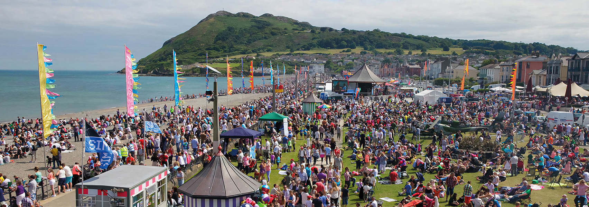

Bray Beach Festivals
Occurs during major events that happen on the beach
Bray Air Display
Thousands of people come to Bray to watch the air display every year

Bray Beach
Bray Head in the background